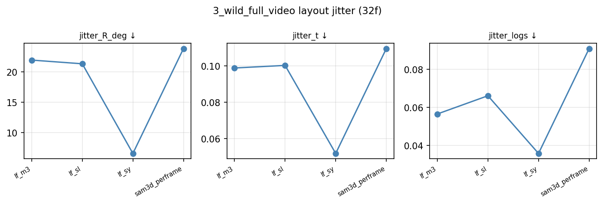
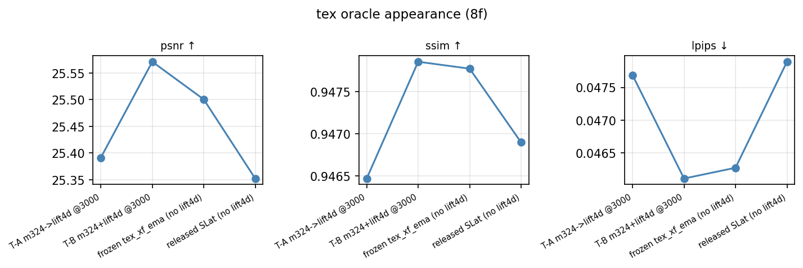

Trained WITH vs WITHOUT lift4d — in-the-wild, 32 frames, full videos
Geometry: occupancy renders (cond view + aligned canonical). Texture: gaussian + mesh renders, shared geometry.
Score graphs
Geometry — wild 32f layout jitter (lf_sl = WITH lift4d, lf_sy = WITHOUT)

Texture — oracle appearance (with-lift4d T-A/T-B vs no-lift4d rows; 8f protocol)

Geometry (occ) — syn4d+lift4d vs syn4d-only
bear
deer
elephant
fox
mose_cat
tiger
Texture (gaussian + mesh) — with-lift4d (T-A/T-B) vs without (m324-only, frozen)
bear
deer
elephant
fox
mose_cat
tiger